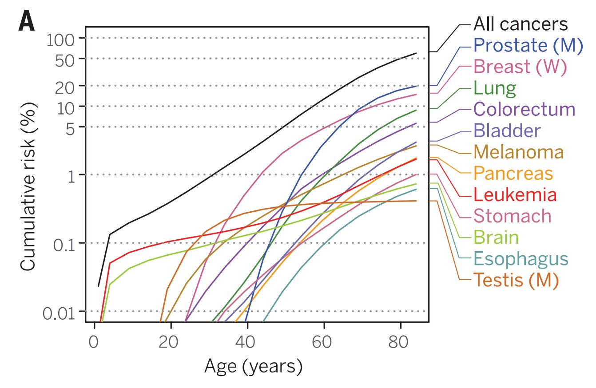
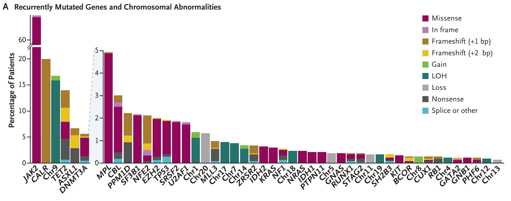
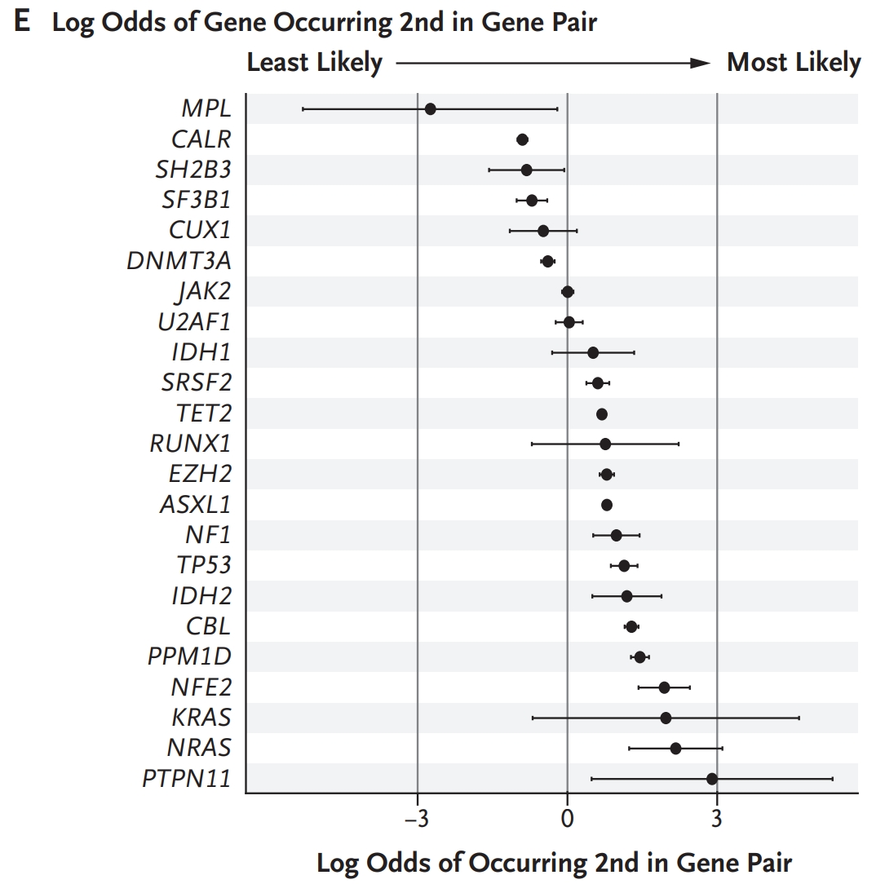
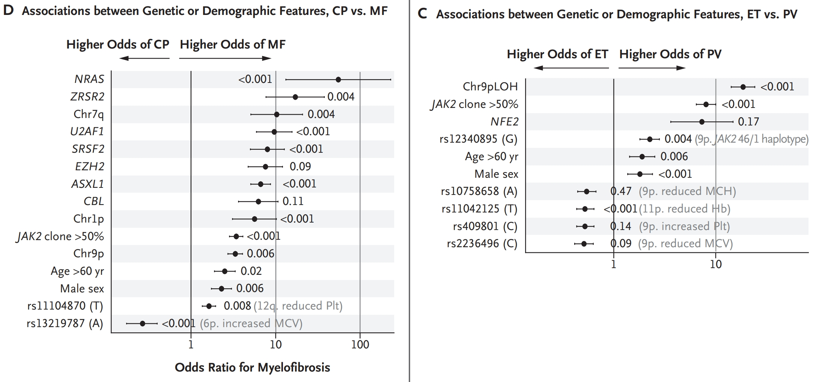
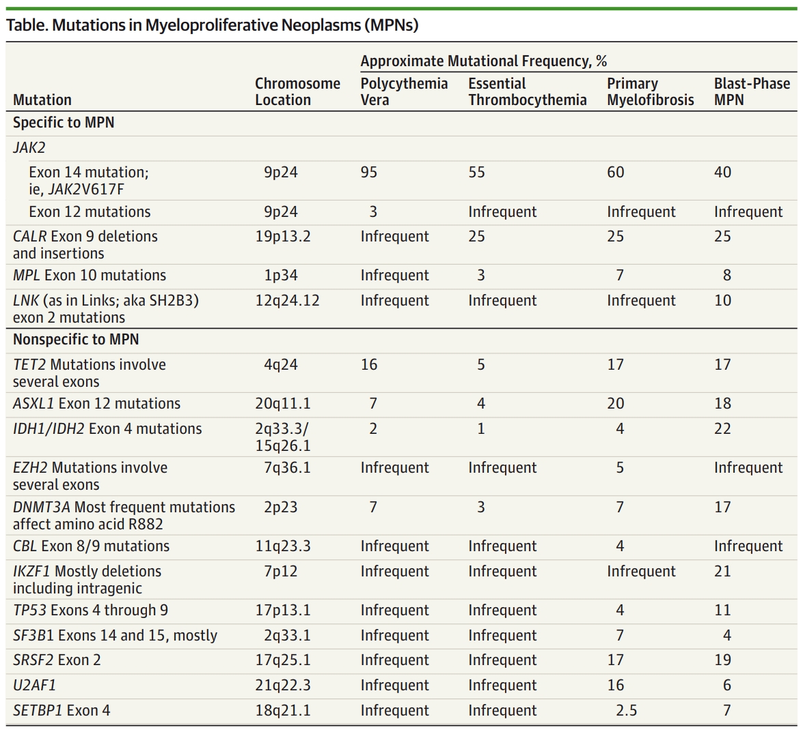
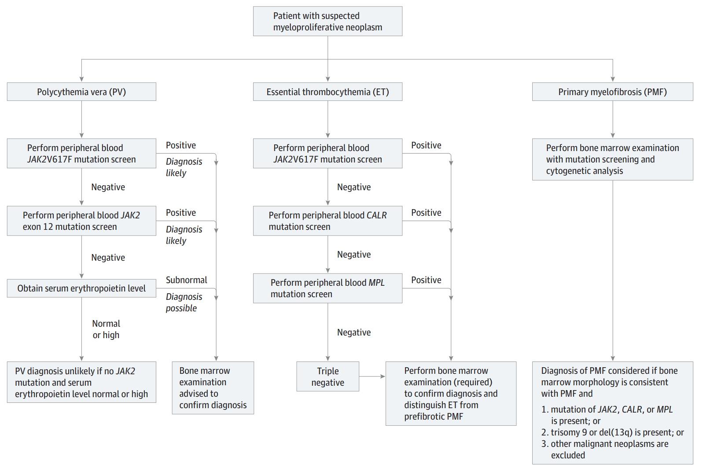

Chapter 7 Cancer
7.1 Introduction
7.1.1 Incidence Rates
Time and age plays a major role in the occurrence of many cancers, where typically the risk of suffering most cancers is about 2% by the age of 40 in humans, while the risk increases to about 50% by the age of 80 (Martincorena and Campbell 2015).
knitr::include_graphics(rep("images/04-4.jpg", 1))
7.2 Oncogenesis
Understanding the cell of origin for a cancer is difficult, but it appears that using ATAC-Seq to measure open chromatin regions within tumor cells can identify the hematopoietic cell of origin (George et al. 2016). This appears to be prognostically relevant as the more stemlike the cell of origin in AML, the worse the prognosis of the patient appears to be (Young and Trowbridge 2016).
7.4 Myeloproliferative Neoplasms
7.4.1 Overview
The class of Myeloproliferative Neoplasms consists of a few different clonal hematopoietic disorders including polycythemia vera, which is characterized by red-cell overproduction; essential thrombocythemia, which involves elevated platelet counts; and myelofibrosis, which is defined by bone marrow fibrosis (Grinfeld et al. 2018). The myelofibrosis MPN subtype can follow and accompany the other subtypes. Myelofibrosis can also appear not in combination with the other two subtypes; termed secondary myelofibrosis (SMF) (Mesa et al. 2012). Using clinical and laboratory features, the three subtypes of MPN can be distinguished but the division of the three can often be quite unclear (Wilkins et al. 2008; Tefferi et al. 2014). The major driver mutations in MPNs are JAK2, CALR, and MPL, and are largely mutually exclusive, though other accompanying mutations are common (Tefferi and Pardanani 2015). Diagnosis is currently performed using bone marrow morphology especially in distinguishing ET from prefibrotic PMF.
knitr::include_graphics(rep("images/06-1.jpg", 1)) 
knitr::opts_chunk$set(comment=NA, fig.width=1, fig.height=1)(Grinfeld et al. 2018)
In the above figure, the LOH occurring at chr9p JAK2 V617F homozygosity, or a high JAK2 V617F allele burden correlated with polycythemia vera.
While the identities of driver mutations can predict disease phenotype and prognosis (Vannucchi et al. 2013; Tefferi et al. 2016; Yogarajah and Tefferi 2017) especially when accompanied by mutation order, it is unclear how the complex genetic landscape of MPNs contributes to the varied diagnostic features of the disease. SF3B1 and DNMT3a mutations commonly drive MPNs; as these appear to drive clonal hematopoiesis it may be possible that some MPNs are arising from asymptomatic clones that have come to dominate the hematopoietic system in a similar manner to CHIP.
knitr::include_graphics(rep("images/06-2.jpg", 1)) 
knitr::opts_chunk$set(comment=NA, fig.width=1, fig.height=1)(Grinfeld et al. 2018)
It is interesting to note that the mutation order can influence the type of MPN (Ortmann et al. 2015; Nangalia et al. 2015). When JAK2 is the first mutation, it tends to produce PV, but when TET2 is the initiating mutation, it tends to produce ET (Ortmann et al. 2015). MPNs that begin with JAK2 mutations also appear to be more sensitive to the JAK2 inhibitor Ruxolitinib.
The concept of genetic canalization or functional buffering is one that describes the consequences of an early mutation, and how it influences the range of future compatible mutations (Ashworth, Lord, and Reis-Filho 2011; Hartman, Garvik, and Hartwell 2001). Some mutations however, have been observed to occur both early and late during tumor progression, perhaps suggesting that the final properties of a tumor are more reflective of the sum of the mutation effects rather than the evolutionary path taken.As an example, in NPM, when TET2 if mutated first, it appears to alter the transcriptional consequences of a subsequent JAK2 mutation.
knitr::include_graphics(rep("images/06-3.jpg", 1)) 
knitr::opts_chunk$set(comment=NA, fig.width=1, fig.height=1)In the above figure, HSPCs originating from a clone that first acquired either a JAK2 or TET2 mutation are expanded in culture to look for an effect of mutation order on the lineage generation (Ortmann et al. 2015). Each bar is a different set of clones coming from a particular MPN type as labeled along the x-axis, and shows an apparent transcriptional difference when the mutation acquisition order is changed. This is perhaps in part due to the epigenetic effects of TET2 mutation when it is the founder mutation.
knitr::include_graphics(rep("images/06-3.jpg", 1)) knitr::opts_chunk$set(comment=NA, fig.width=1, fig.height=1)(Grinfeld et al. 2018)
Using Mayo Clinic patients as an approximation for overall MPN incidence, about 12% of all MPN incidence occurs within patients under 40 years of age, with the median age of incidence being 50 years (Szuber et al. 2018). With a median follow-up period of roughly 10 years, leukemia incidence is really not all that high, at about 5% on average. The probability of developing fibrosis is elevated in the younger individuals, which may be explained by a conspicuously longer expected survival time. Mean survival times in the Mayo Clinic data are 37, 35, 20 for under 40, 22, 22, 8 for 40-60, and 10, 11, 3 for over 60 for PV, ET, and PMF respectively (Szuber et al. 2018; Tefferi and Pardanani 2015). The disease complications are typically thrombosis, leukemic transformation, or fibrotic transformation. In PV and ET, risk factors for survival include older age, leukocytosis, and thrombosis, whereas JAK2 mutation in ET is associated with increased risk of thrombosis. Thrombosis risk in PV is typically treated by phlebotomy to reduce haematocrit levels, or aspirin to reduce clotting potential in both PV and ET. Those individuals that are at a high risk of clotting may also be given hydroxyurea, interferon-alpha and busulfan as cytoreductive agents. Though the JAK2 inhibitor Ruxolitinib has been approved for use in treating hydroxyurea-resistant PV it is still unclear what the effects of chronic administration are.
7.4.2 Genetics
JAK2 is the most common of the mutations found within MPNs, occurring in about 98% of PV 55% in ET and 60% in PMF (Tefferi and Pardanani 2015). JAK2 mutations also appear to be generally associated with old age, while CALR and PMF are more associated with young age. Below is a more in-depth understanding of the link between certain disease subtypes and the mutations associated with them. It is possible that JAK2 and MPL mutations directly activate JAK-STAT which allows cells to proliferate in a cytokine independent manner.
knitr::include_graphics(rep("images/06-5.jpg", 1)) 
knitr::opts_chunk$set(comment=NA, fig.width=1, fig.height=1)(Tefferi and Pardanani 2015)
It is possible that JAK-STAT activation plays a key role in the development of MPNs, but it seems that people are confused why MPNs exist in an inflammatory state with altered cytokine signaling. I’m not sure I understand why the two understandings are inconsistent with each other (Rampal et al. 2014).
7.4.3 Disease Manifestations
Complete blood counts exceed the upper limit of the WHO reference range. Other characteristic features include palpable splenomegaly, anemia, aquagenic pruritus (itching when skin contacts water), unusual thrombosis such as portal or hepatic vein thrombosis, bone marrow fibrosis, and extramedullary hematopoiesis. A more complete explanation of diagnostics can be found in the figure below.
knitr::include_graphics(rep("images/06-6.jpg", 1)) 
knitr::opts_chunk$set(comment=NA, fig.width=1, fig.height=1)(Tefferi and Pardanani 2015).
References
Martincorena, Iñigo, and Peter J Campbell. 2015. “Somatic Mutation in Cancer and Normal Cells.” Science 349 (6255). American Association for the Advancement of Science: 1483–9.
George, Joshy, Asli Uyar, Kira Young, Lauren Kuffler, Kaiden Waldron-Francis, Eladio Marquez, Duygu Ucar, and Jennifer J Trowbridge. 2016. “Leukaemia Cell of Origin Identified by Chromatin Landscape of Bulk Tumour Cells.” Nature Communications 7. Nature Publishing Group: 12166.
Young, Kira, and Jennifer J Trowbridge. 2016. “Open Chromatin Profiling as a Novel Strategy for Identifying Cancer Cell of Origin.” Molecular & Cellular Oncology 3 (6). Taylor & Francis: e1236770.
McKerrell, Thomas, Naomi Park, Thaidy Moreno, Carolyn S Grove, Hannes Ponstingl, Jonathan Stephens, Charles Crawley, et al. 2015. “Leukemia-Associated Somatic Mutations Drive Distinct Patterns of Age-Related Clonal Hemopoiesis.” Cell Reports 10 (8). Elsevier: 1239–45.
Krönke, Jan, Lars Bullinger, Veronica Teleanu, Florian Tschürtz, Verena I Gaidzik, Michael WM Kühn, Frank G Rücker, et al. 2013. “Clonal Evolution in Relapsed Npm1-Mutated Acute Myeloid Leukemia.” Blood 122 (1). Am Soc Hematology: 100–108.
Abelson, Sagi, Grace Collord, Stanley WK Ng, Omer Weissbrod, Netta Mendelson Cohen, Elisabeth Niemeyer, Noam Barda, et al. 2018. “Prediction of Acute Myeloid Leukaemia Risk in Healthy Individuals.” Nature 559 (7714). Nature Publishing Group: 400.
Yokoyama, Akira, Nobuyuki Kakiuchi, Tetsuichi Yoshizato, Yasuhito Nannya, Hiromichi Suzuki, Yasuhide Takeuchi, Yusuke Shiozawa, et al. 2019. “Age-Related Remodelling of Oesophageal Epithelia by Mutated Cancer Drivers.” Nature 565 (7739). Nature Publishing Group: 312.
Martincorena, Iñigo, Joanna C Fowler, Agnieszka Wabik, Andrew RJ Lawson, Federico Abascal, Michael WJ Hall, Alex Cagan, et al. 2018. “Somatic Mutant Clones Colonize the Human Esophagus with Age.” Science 362 (6417). American Association for the Advancement of Science: 911–17.
Watson, Caroline J, Alana Papula, Yeuk P G Poon, Wing H Wong, Andrew L Young, Todd E Druley, Daniel S Fisher, and Jamie R Blundell. 2019. “The Evolutionary Dynamics and Fitness Landscape of Clonal Haematopoiesis.” bioRxiv.
Grinfeld, Jacob, Jyoti Nangalia, E Joanna Baxter, David C Wedge, Nicos Angelopoulos, Robert Cantrill, Anna L Godfrey, et al. 2018. “Classification and Personalized Prognosis in Myeloproliferative Neoplasms.” New England Journal of Medicine 379 (15). Mass Medical Soc: 1416–30.
Mesa, Ruben A, Jyotsna Mehta, Hongwei Wang, Yanxin Wang, Usman Iqbal, Frank Neumann, Yanzhen Zhang, and Theodore Colton. 2012. “Epidemiology of Myeloproliferative Disorders in Us-a Real World Analysis.” Am Soc Hematology.
Wilkins, Bridget S, Wendy N Erber, David Bareford, Georgina Buck, Keith Wheatley, Clare L East, Beverley Paul, Claire N Harrison, Anthony R Green, and Peter J Campbell. 2008. “Bone Marrow Pathology in Essential Thrombocythemia: Interobserver Reliability and Utility for Identifying Disease Subtypes.” Blood 111 (1). Am Soc Hematology: 60–70.
Tefferi, Ayalew, J Thiele, AM Vannucchi, and T Barbui. 2014. “An Overview on Calr and Csf3r Mutations and a Proposal for Revision of Who Diagnostic Criteria for Myeloproliferative Neoplasms.” Leukemia 28 (7). Nature Publishing Group: 1407.
Tefferi, Ayalew, and Animesh Pardanani. 2015. “Myeloproliferative Neoplasms: A Contemporary Review.” JAMA Oncology 1 (1). American Medical Association: 97–105.
Vannucchi, AM, TL Lasho, P Guglielmelli, F Biamonte, A Pardanani, A Pereira, C Finke, et al. 2013. “Mutations and Prognosis in Primary Myelofibrosis.” Leukemia 27 (9). Nature Publishing Group: 1861.
Tefferi, Ayalew, Terra L Lasho, Paola Guglielmelli, Christy M Finke, Giada Rotunno, Yoseph Elala, Annalisa Pacilli, et al. 2016. “Targeted Deep Sequencing in Polycythemia Vera and Essential Thrombocythemia.” Blood Advances 1 (1). American Society of Hematology: 21–30.
Yogarajah, Meera, and Ayalew Tefferi. 2017. “Leukemic Transformation in Myeloproliferative Neoplasms: A Literature Review on Risk, Characteristics, and Outcome.” In Mayo Clinic Proceedings, 92:1118–28. 7. Elsevier.
Ortmann, Christina A, David G Kent, Jyoti Nangalia, Yvonne Silber, David C Wedge, Jacob Grinfeld, E Joanna Baxter, et al. 2015. “Effect of Mutation Order on Myeloproliferative Neoplasms.” New England Journal of Medicine 372 (7). Mass Medical Soc: 601–12.
Nangalia, Jyoti, Francesca L Nice, David C Wedge, Anna L Godfrey, Jacob Grinfeld, Clare Thakker, Charlie E Massie, et al. 2015. “DNMT3A Mutations Occur Early or Late in Patients with Myeloproliferative Neoplasms and Mutation Order Influences Phenotype.” Haematologica. Haematologica, haematol–2015.
Ashworth, Alan, Christopher J Lord, and Jorge S Reis-Filho. 2011. “Genetic Interactions in Cancer Progression and Treatment.” Cell 145 (1). Elsevier: 30–38.
Hartman, John L, Barbara Garvik, and Lee Hartwell. 2001. “Principles for the Buffering of Genetic Variation.” Science 291 (5506). American Association for the Advancement of Science: 1001–4.
Szuber, Natasha, Rangit R Vallapureddy, Domenico Penna, Terra L Lasho, Christy Finke, Curtis A Hanson, Rhett P Ketterling, Animesh Pardanani, Naseema Gangat, and Ayalew Tefferi. 2018. “Myeloproliferative Neoplasms in the Young: Mayo Clinic Experience with 361 Patients Age 40 Years or Younger.” American Journal of Hematology 93 (12). Wiley Online Library: 1474–84.
Rampal, Raajit, Fatima Al-Shahrour, Omar Abdel-Wahab, Jay P Patel, Jean-Philippe Brunel, Craig H Mermel, Adam J Bass, et al. 2014. “Integrated Genomic Analysis Illustrates the Central Role of Jak-Stat Pathway Activation in Myeloproliferative Neoplasm Pathogenesis.” Blood 123 (22). Am Soc Hematology: e123–e133.